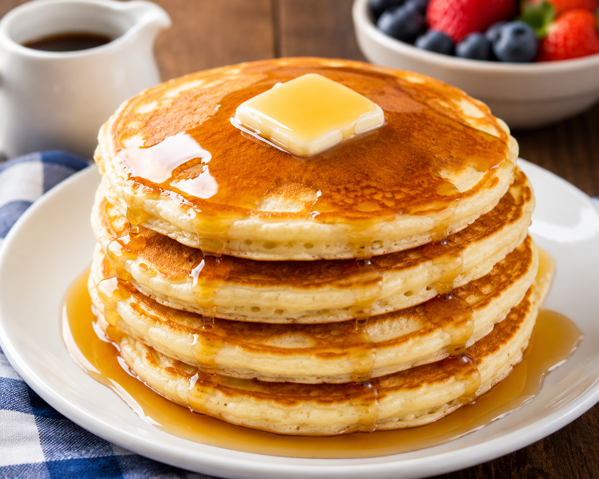

Classic Fluffy Pancakes

Ingredients
- 2 cups all-purpose flour
- 3 tbsp sugar
- 2 tsp baking powder
- 1 tsp baking soda
- 1/2 tsp salt
- 2 cups buttermilk (or whole milk with 1 tbsp lemon juice)
- 1/4 cup unsalted butter, melted and cooled slightly
- 2 large eggs
- 1 tsp vanilla extract
- Extra butter or oil for the griddle
- Maple syrup for serving
Instructions
- In a large bowl, whisk together the flour, sugar, baking powder, baking soda, and salt.
- In a separate medium bowl, whisk together the buttermilk, melted butter, eggs, and vanilla extract.
- Pour the wet ingredients into the dry ingredients. Use a wooden spoon or spatula to stir just until combined. *Tip: Do not overmix! A few lumps are completely fine and help keep the pancakes fluffy.* Let the batter rest for 5 minutes.
- Heat a large non-stick skillet or griddle over medium heat and lightly grease it with a little butter or oil.
- Scoop about 1/3 cup of batter onto the skillet for each pancake. Cook until bubbles begin to form on the surface and the edges look set (about 2-3 minutes).
- Carefully flip the pancake and cook the other side until golden brown (about another 1-2 minutes).
- Serve hot with a pat of butter and plenty of warm maple syrup!